The feel
Voxel noir builds the detective's night city out of cubes. Cole Jefferies wanted Shadows of Doubt to have noir's rain, haze and warm windows, "a bit melancholy, a bit harsh and industrial, but not without warmth and humanity", in an alternate 1970s and 80s with Blade Runner's technology a decade early.1 One reviewer summed up the result as a "rain-soaked noir dystopian city".2
The cubes suit the subject. Marko Dieckmann found that voxels fit Cloudpunk's cyberpunk setting, since most buildings in modern cities already have a blocky layout.3 The low detail is part of the pleasure too: Jefferies suggests that voxels under modern rendering evoke the way we remember old games, brought to life but still low enough in definition to let us "fill the gaps with our imagination".4
- block-built
- rain-soaked
- procedural
- suspicious
- lamplit
- diorama
Where it comes from
Voxels, "pixels with depth", were introduced to players by NovaLogic's flight sim Comanche (1992), which built its hills and valleys from them.5 Westwood's Blade Runner (1997) went on to light voxel characters dynamically over pre-rendered backgrounds.6 Two of the games that define the style today started from the free editor MagicaVoxel: ION LANDS found it while looking for a faster way to make assets and fell for its technical-looking art,7 and the voxels of Teardown began with MagicaVoxel images Dennis Gustafsson came across on Twitter.8 Cloudpunk (2020) made the player a driver in a voxel metropolis,9 and ColePowered Games' Shadows of Doubt left early access for its full release in September 2024.10
Core elements
Uniform small voxels
Teardown's buildings and objects are made of tiny cubes, all the same size.11 At 10 cm they are much smaller than in typical voxel games, a scale Dennis Gustafsson took from MagicaVoxel art.8
Indexed colour palettes
In Teardown each voxel is a single byte pointing into a 256-entry palette of colours and materials, so a cube is quick to remove or repaint.11 Shadows of Doubt paints with pixel-art palettes and gives every room its own five colours.4
Warm window light
Jefferies started from John Atkinson Grimshaw's Victorian nightscapes: dreary blues, greens or purples against the warm, cosy lights of the buildings, with plenty of rain and haze.1 Cloudpunk is set at night so that its windows can glow with colour.12
Modern lighting on voxels
Voxels evoke a low-fidelity style, yet Jefferies found they come alive under Unity's high definition render pipeline.4 Teardown traces rays through its voxel volumes for ambient occlusion, soft shadows and specular occlusion, though its light does not bounce.13
Fully explorable interiors
Shadows of Doubt lets you explore every room of every building, so you can look up at any window and decide to break in.14 The lights mean something too: a lit window means someone has switched on the light in that room, so they are probably home.15
The case board
Evidence opens in windows that look like case files and can be pinned to a corkboard, a detective trope everyone knows from film and TV.16 String joins the pins and carries the case: incrimination flows along it from a body, to the apartment where it was found, to whoever lives there.16
How to do it
Choose the voxel size first
Teardown's voxels are 10 cm, much smaller than in typical voxel games, and their size is one of the first things players notice.8 Its objects can be up to 256 voxels on each side, but about 128 avoids stutters, and voxels must touch face to face to hold together.17
Model or voxelise the assets
Model props and buildings in a voxel editor, and keep their material settings when you import them into the game.3 To reuse existing 3D models, voxelise them, and export the results as meshes with ordinary UV maps instead of an atlas.4
Paint from small palettes
Paint with an indexed palette of 255 colours and let the index carry the material too: Teardown treats colours in slots 57 to 72 as wood.17 Shadows of Doubt paints props from pixel-art palettes, adds noise, and turns a greyscale copy into a height map for normal maps.4 Pick each room's palette from period photos and design books, as Jefferies does: two primary and two secondary colours that complement each other, plus a neutral.18
Plan buildings floor by floor
Shadows of Doubt lays the city out in 1.8 m tiles, and every building floor is 15 × 15 tiles.19 Jefferies draws floorplans divided into addresses, then the game generates the walls, placing rooms by floor space, shape and windows.19 Different floor presets make buildings differ inside while keeping the workload manageable.15
Use few real-time lights
A procedural city can't bake its lighting, so Shadows of Doubt lights everything in real time and uses fewer lights, whose heavy shadows suit noir.20 One large area light over each street stands in for its ambient light, tinted by whatever spawns there, such as a red paper lantern, and each building has its own light layer.20 Jefferies singles out volumetric lighting and fog as a large part of why the game looks as good as it does.21
Build people from parts
Split each citizen into head, torso and legs, which makes varied shapes, skin tones and hairstyles easy.22 A walk can work like stop motion, with a separate leg mesh for each frame, mirrored for the second half of the cycle.22 Faces in Shadows of Doubt are 5 voxels wide, with a 5-voxel brow on masculine heads and 3 on feminine ones.23
Pin the clues to a corkboard
Make evidence windows look like case files that can be pinned to a corkboard.16 Draw each connection as string that runs from white to red as it gets more incriminating, grows wider the more reliable it is, and is animated in the direction the incrimination flows.16
Cheat sheet
- Voxel size
- 10 cm, in Teardown8
- Object size
- Up to 256³ voxels in Teardown, about 128³ advised17
- Palette
- 255 indexed colours; Teardown reads the index as the material17
- Room palette
- 5 colours: 2 primary, 2 secondary, 1 neutral18
- Floor plan
- 15 × 15 tiles of 1.8 m19
- Face
- 5 voxels wide23
- Lighting
- All real time, few lights, heavy shadows20
- Interface type
- Pixel fonts at 1×, 2× or more16
Do
- Set it at night, so the windows can glow with colour.12
- Let light tell the player something: in Shadows of Doubt, light under a closed door shows the room inside is lit.22
- Add detail wherever the camera comes close. Cloudpunk began rough and built to be seen from a distance, and when first-person exploration arrived, ION LANDS added a ton of detail.7
- Make the interface look like real objects, as Shadows of Doubt does with its case files, retro digital watch and corkboard.16
Avoid
- Minecraft's cartoonishness. Voxels are associated with it, and Jefferies felt that doesn't fit a noir tone at all.4
- Flat, noise-free colour. Surfaces without noise look cartoon-like.4
- Too many real-time lights. They are expensive, and fewer of them give heavy shadows that suit noir.20
- Voxels that touch only at edges or corners. In Teardown they fall apart the moment they are damaged.17
- Generated rooms that can only be reached through each other. Add hallways.19
Tools and tutorials
- MagicaVoxel
The free editor and renderer that, in Cole Jefferies' words, "pretty much all voxel artists use".4
- Goxel
A free, open source voxel editor with unlimited scene size, which exports to MagicaVoxel and Qubicle.24
- Qubicle
The voxel editor Shadows of Doubt was made in. It can voxelise 3D meshes and export meshes with ordinary UV maps.4
- Creating a city in MagicaVoxel
ArtChanny builds the assets for a city in MagicaVoxel.
- MagicaVoxel for concept art
Florian Coudray on using MagicaVoxel for concept art.
- Raytracing voxels in Teardown and beyond
A Graphics Programming Conference talk on ray tracing voxels in Teardown and beyond.
Palette
Sampled from Shadows of Doubt, its case board, Cloudpunk and Teardown. Every cube here shows one colour lit from above and shaded on two sides.
Feel the vibe
Listen
Monomoon's score, released on its own alongside the 1.0 launch.10 Good for a long night of snooping.
YouTubeBy Harry Critchley, Cloudpunk's composer.3 Wide, wet synths for the first look over the edge of the city.
YouTubeFrom Teardown, a voxel sandbox built around heists.8 Light-hearted, a reminder that blocks can also be funny.
YouTubeSlow dark jazz for a stakeout. In Cloudpunk's city of Nivalis you would need a permit even to listen to it.7
YouTube
More references
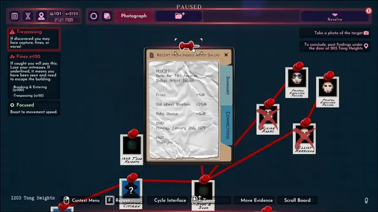
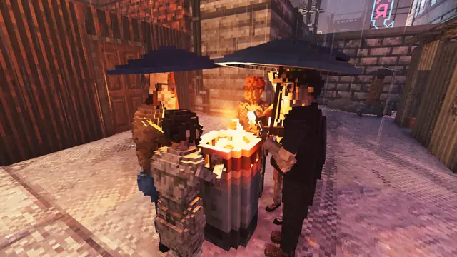
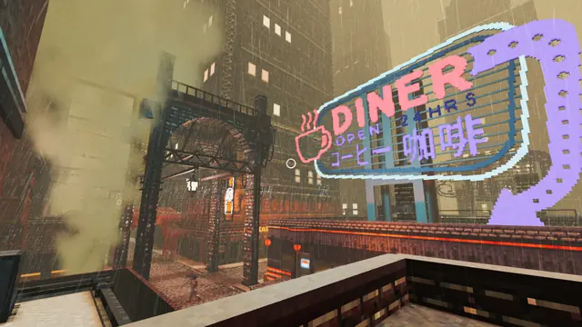
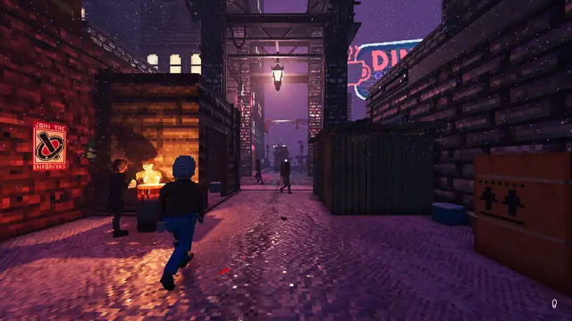
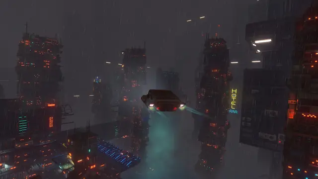
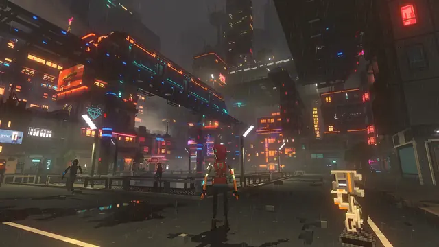
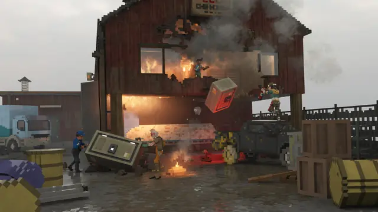
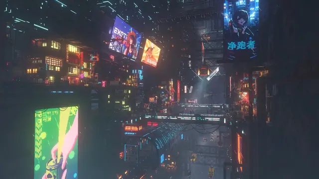
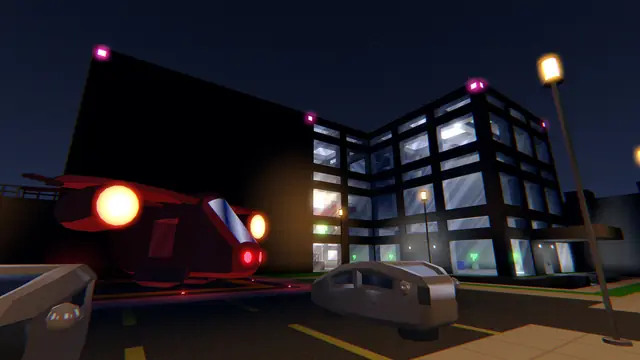
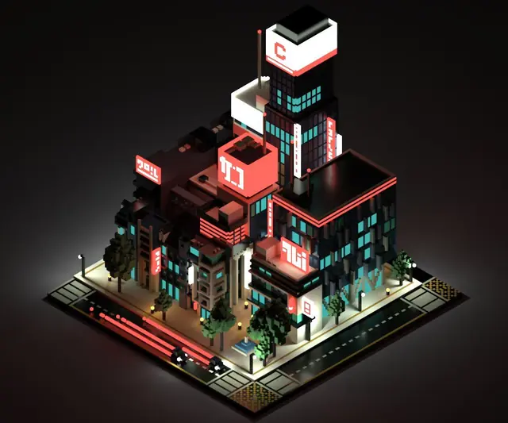
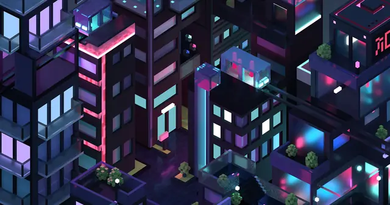
Games
- Blade Runner
Westwood lit voxel characters dynamically over pre-rendered backgrounds.6
- NEON STRUCT
Minor Key Games' political thriller stealth game, set in "2015 as envisioned in 1985".25 Study how far plain blocks and hard light can carry it.
- Cloudpunk
A vertical city in five layers, set at night so its windows glow.12 Study the stylised clouds.
- Teardown
Destructible 10 cm voxels, lit with ray-traced shadows and occlusion.8,13 Almost all its assets were modelled in MagicaVoxel.17 Study the lighting.
- Shadows of Doubt
A procedural city of hundreds of citizens, each with a job and a daily routine.26 Its voxel art was made in Qubicle, which can voxelise existing 3D models.4 Study the interiors and the case board.
- Nivalis Nights
ION LANDS' slice-of-life game, set in Nivalis, the city of Cloudpunk.9
Film, art and more
- Liverpool Quay by Moonlight
John Atkinson Grimshaw's docks by night. Cole Jefferies named Grimshaw's rainy, hazy nightscapes as one of his first influences for Shadows of Doubt.1
- Nighthawks
A visual parallel for the lit window on a dark street. Study how one bright interior holds the whole frame.
- Blade Runner
Dieckmann's reference for the look and atmosphere of Cloudpunk's Nivalis,3 and the technology Shadows of Doubt imagines a decade early.1
- Sin City
Study how Frank Miller cuts noir down to hard black and white shapes.
- Kowloon Walled City
Study how homes stack into one solid block.
Sources
- 1Shadows of Doubt DevBlog 9: Inspiration Diary
- 2Shadows of Doubt review: "The true potential of this detective sim is limitless - but it just hasn't reached that point yet"
- 3Cloudpunk: New Voxel Indie Game
- 4Shadows of Doubt DevBlog 21: How Voxels Saved the Project
- 5Great moments in PC gaming: Being blown away by voxels in Comanche
- 6An extended Blade Runner interview with Westwood co-founder Louis Castle
- 7Interview: Cloudpunk's creators on the decisions behind its direction
- 8Teardown and Voxel-Based Rendering with Dennis Gustafsson (transcript)
- 9The makers of Cloudpunk reveal Nivalis, a 'slice of life simulation in a cyberpunk world'
- 10Shadows of Doubt DevBlog 41: 1.0!
- 11Teardown Frame Teardown
- 12ION LANDS on Cloudpunk's Visuals and Worldbuilding
- 13Teardown Developer Breaks Down Multiplayer and Voxel Destruction Tech
- 14Shadows of Doubt DevBlog 12: HDRP Makes Things Prettier
- 15Shadows of Doubt DevBlog 5: Pivot!
- 16Shadows of Doubt DevBlog 4: Case Folders & Cork Boards
- 17Teardown modding documentation
- 18Shadows of Doubt DevBlog 14: Interior Colours
- 19Shadows of Doubt DevBlog 13: Creating Procedural Interiors
- 20Shadows of Doubt DevBlog 30: The Top Shadows of Doubt Development Challenges Part I
- 21Shadows of Doubt DevBlog 46
- 22Shadows of Doubt DevBlog 7: There’s been a (Procedurally Generated) Murder!
- 23Shadows of Doubt DevBlog 26: Populating the Population: Sculpting Faces
- 24Goxel
- 25Neon Struct is a "political thriller stealth game" from Eldritch devs
- 26Shadows of Doubt DevBlog 8: Simulating a City